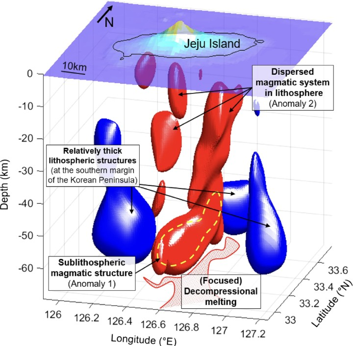
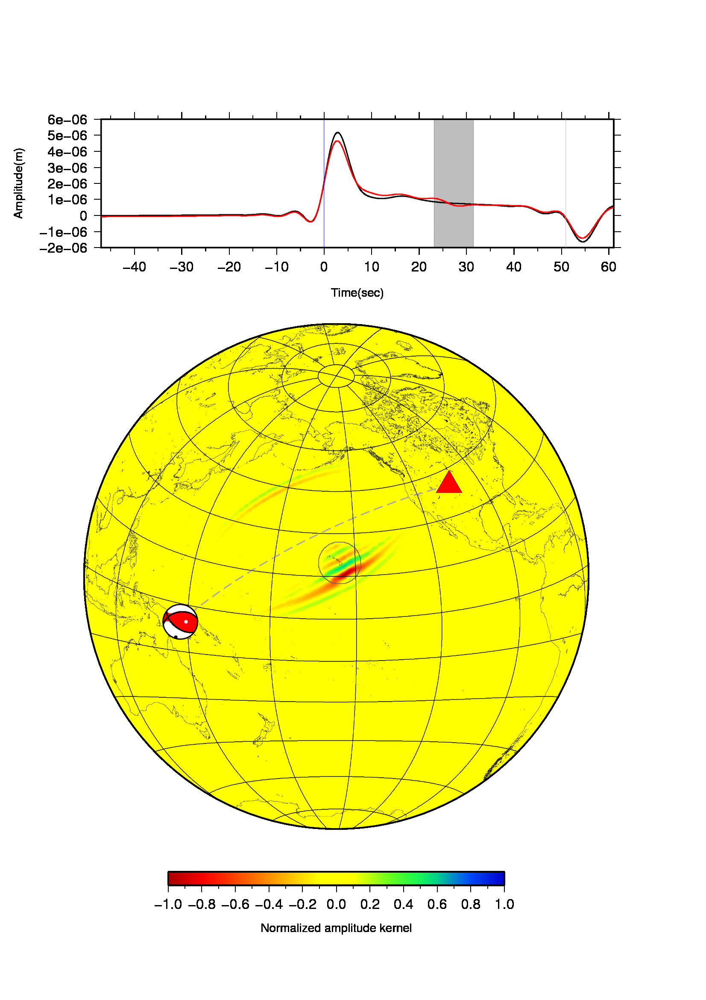

2026
Locating Moonquakes With Single-Station Seismology
Seismology · Planetary Science
I use seismic observations, numerical wavefield modelling, and inverse methods to study earthquakes and the interiors of rocky planets.
I am a seismologist interested in how rocky planets deform, fracture, and evolve.
My research combines seismic observations with numerical wavefield simulations and inverse methods to investigate planetary seismicity, earthquake source processes, and the structure and dynamics of planetary interiors.
Current interests include marsquakes and moonquakes, seismic source characterisation, seismic imaging, and the dynamics of Earth's lithosphere and deep mantle.
Sponsored Researcher (Postdoctoral Fellow, NRF Korea)
Department of Earth Science and Engineering
Imperial College London · London, United Kingdom
Advisor: Dr. Doyeon Kim
Background. Ph.D. in Seismology, Seoul National University (2021).
PhD advisor:
Prof. Junkee Rhie ↗
From earthquake sources to the interiors of Earth, Mars, and the Moon.
Marsquakes, moonquakes, impact-generated seismic signals, planetary crustal structure, and the tectonic activity of rocky worlds.
02↗Moment tensors, seismic source characterisation, magnitude scaling, and waveform-based constraints on faulting processes.
03↗Seismic tomography, full-wavefield simulations, inverse problems, and structural constraints on lithosphere and mantle dynamics.
04↗Public seismic datasets, computational tools, numerical solvers, and reproducible resources supporting my research.

Jeju Volcanic Island
Three-dimensional view of lithospheric and magmatic structures beneath an intraplate volcanic system.

Hawaiian ULVZ
Animated Sdiff finite-frequency sensitivity kernel illustrating wavefield sensitivity near the core–mantle boundary.
Locating Moonquakes With Single-Station Seismology
Continuous Nonthermal Slab Gap Formed by Progressive Tearing Beneath Northeast Asia
Seismic and Mineralogical Evidence for an Iron-Rich Mega Ultralow-Velocity Zone Beneath Hawai'i
Research updates, press releases, and media coverage.
This section is ready for future paper announcements, institutional press releases, interviews, and media coverage.
Interested in planetary seismology, earthquake sources, or seismic wavefields? Get in touch.
Department of Earth Science and Engineering
Imperial College London
London, United Kingdom